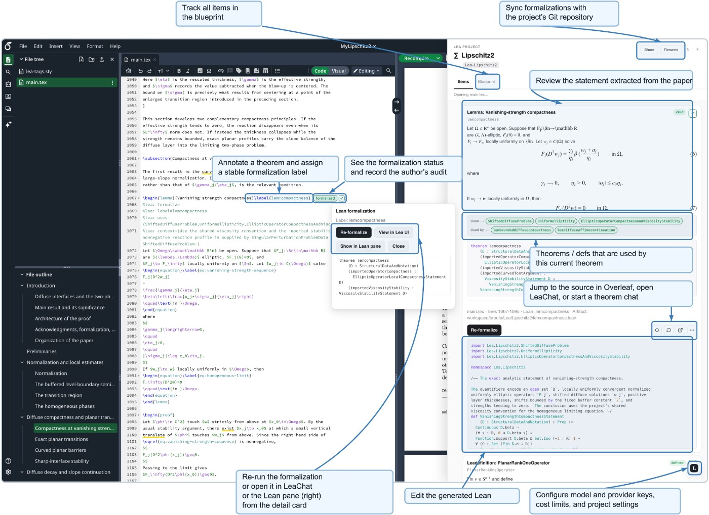

论文中的标注成为任务入口
Lea提供共享的形式化证明后端，LeaChat用于交互写证明，LeaOverleaf把论文中的定理标注与依赖连接到Lean。作者不必把每个目标复制到互不相干的聊天里，再手工记住哪一段已经完成。我们的判断是，这种入口适合仍在修改的数学稿件：首先把想要证明的对象说清楚，随后追踪状态，而不是先生成一大段看起来完整的证明再猜它对应哪句话。标注的质量仍由作者负责，遗漏假设不会因换成图形界面而自动消失。
Lea · 论文／形式化证明研究软件

Lea提供共享的形式化证明后端，LeaChat用于交互写证明，LeaOverleaf把论文中的定理标注与依赖连接到Lean。作者不必把每个目标复制到互不相干的聊天里，再手工记住哪一段已经完成。我们的判断是，这种入口适合仍在修改的数学稿件：首先把想要证明的对象说清楚，随后追踪状态，而不是先生成一大段看起来完整的证明再猜它对应哪句话。标注的质量仍由作者负责，遗漏假设不会因换成图形界面而自动消失。
系统区分不含sorry的形式化结果、经过SafeVerify检查的结果，以及只能由数学家设置的人工审阅状态。这个层次避免把机器通过等同于原意正确。读者可以想象一个边界条件写错的定理：工具也许完全正确地证明了另一个更弱的命题，界面应让人直接看到差别。我们建议试用时主动放入一个缺失条件的目标，看系统是否保留可读的原始语句与产出，而不是只显示一个绿勾。这样的测试关注协作边界，不是给数学正确性重新打一个主观分。
Lea把证明与标注、产物及相关导入绑定，变更后会使受影响结果过时。作者可继续对话或调整证明路线；同一会话能在两个客户端之间接续。对于真实论文，值得观察的不是总共自动生成了多少行，而是修改一个定义后，人能否准确找到要重看的定理。我们会把人工重新确认的成本单独记录：依赖图若提示过多，会造成审阅疲劳；若遗漏影响，就可能让旧结论继续流通。两种错误需要分开统计，不能仅用任务完成率概括。
论文展示一个Durfee square生成函数案例，过程中仍需要人工纠正，作者也说明没有对照评估，产出尚需整理，当前不支持多位数学家同时操作同一项目。对准备采用的团队，这意味着先以小范围伴随论文的证明试点，而不是承诺自动承担完整研究。我们希望检查的后续指标包括陈述对应性、依赖失效的准确性和审阅所需时间。公开可读的研究不等于已经验证了商业服务、定价或所有部署组合，本刊没有运行该软件或复现证明。